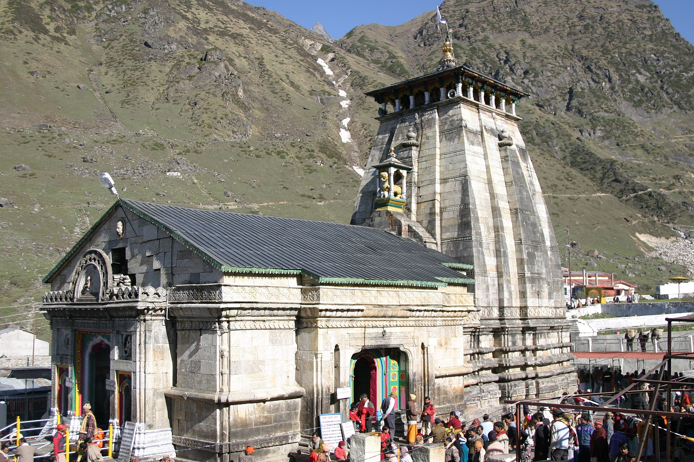

భారతదేశంలోనే కాక ప్రపంచవ్యాప్తంగా శివభక్తులందరికీ అత్యున్నత మోక్షధామంగా భాసిల్లుతున్న పరమ పవిత్ర పుణ్యక్షేత్రం శ్రీ కేదారనాథ జ్యోతిర్లింగం.
ఈ దివ్యధామం ఉత్తరాఖండ్ రాష్ట్రంలోని రుద్రప్రయాగ్ జిల్లా పరిధిలో, గఢ్వాల్ హిమాలయ పర్వత శ్రేణులలో సముద్ర మట్టానికి సుమారు 3,583 మీటర్ల (11,755 అడుగుల) వినువీధుల ఎత్తున కొలువై ఉంది. పవిత్ర మందాకిని నదీ మూల ప్రవాహం పక్కనే, నిరంతరం మంచుతో మెరిసిపోయే కేదారనాథ్ పర్వత శిఖరాల సాక్షిగా వెలసిన ఈ మందిరం ద్వాదశ జ్యోతిర్లింగాలలో అత్యంత ఉత్తరాన ఉన్న దివ్య ధామం.
ఉత్తరాఖండ్ చార్ ధామ్ (యమునోత్రి, గంగోత్రి, కేదారనాథ్, బదరీనాథ్) యాత్రలో మరియు పంచకేదార్ క్షేత్రాలలో కేదారనాథ్ ప్రధానమైన శివక్షేత్రంగా విరాజిల్లుతోంది.
శ్రీ కేదారనాథ జ్యోతిర్లింగ క్షేత్రం
ద్వాదశ జ్యోతిర్లింగ దివ్య క్షేత్రం & హిమాలయ ముక్తిధామం • రుద్రప్రయాగ్, ఉత్తరాఖండ్

౧. పరిచయం
౨. క్షేత్ర పురాణ గాథ — పాండవుల ప్రాయశ్చిత్తం & వృషభ మూపుర ఆవిర్భావం
మహాభారత ఇతిహాసం మరియు శివ పురాణ కోటిరుద్ర సంహిత ప్రకారం, కురుక్షేత్ర మహాసంగ్రామంలో తమ సొంత బంధువులను, గురువులను సంహరించడం వలన కలిగిన గోత్రహత్యా, బ్రహ్మహత్యా మహాపాతకాల నివారణార్థం పాండవులు వేదవ్యాస మహర్షి ఆదేశానుసారం పరమశివుని శరణువేడడానికి బయలుదేరారు.
• శివుని అంతర్ధానం: కురుక్షేత్ర రక్తపాతానికి కోపగించిన పరమశివుడు పాండవులకు వెంటనే దర్శనమివ్వక కాశీ నుండి హిమాలయాలలోని కేదార ప్రాంతానికి వెళ్లి దాక్కున్నాడు. పాండవులు శంకరుని వెతుకుతూ హిమాలయాలకు చేరుకున్నారు.
• వృషభ రూపం & భీముని పరాక్రమం: పాండవులను తప్పించుకోవడానికి పరమశివుడు ఒక దివ్య వృషభం (ఎద్దు) రూపాన్ని ధరించి అక్కడి పశువుల మందలో కలిసిపోయాడు. ధర్మరాజు ఆదేశంతో భీముడు తన భారీ కాయాన్ని విస్తరించి రెండు పర్వత శిఖరాలపై చెరొక కాలు పెట్టి నిలబడ్డాడు. అన్ని పశువులు భీముని కాళ్ళ మధ్య నుండి దాటి వెళ్ళాయి కానీ శివుని వృషభ రూపం మాత్రం తలవంచక వెనుకడుగు వేసింది.
• వృషభ మూపురం పట్టుకున్న భీముడు: భీముడు ఆ ఎద్దును పట్టుకోబోగా, అది భూమిలోకి అంతర్ధానం కావడం ప్రారంభించింది. ఆ సమయంలో భీముడు పరుగున వెళ్లి ఆ వృషభపు వెనుకటి మూపురాన్ని (Hump) గట్టిగా పట్టుకున్నాడు. భీముని అచంచల భక్తికి, పట్టుదలకు మెచ్చిన పరమశివుడు ఆ రూపంలోనే అక్కడ ప్రత్యక్షమై పాండవుల సమస్త పాపాలను క్షమించి మోక్షాన్ని అనుగ్రహించాడు.
వృషభపు ఆ మూపుర భాగమే నేడు కేదారనాథ్ గర్భగుడిలో సహజసిద్ధమైన శంకువాకార త్రిభుజ శిలారూప జ్యోతిర్లింగంగా భక్తులచే పూజలందుకుంటోంది.
• శివుని అంతర్ధానం: కురుక్షేత్ర రక్తపాతానికి కోపగించిన పరమశివుడు పాండవులకు వెంటనే దర్శనమివ్వక కాశీ నుండి హిమాలయాలలోని కేదార ప్రాంతానికి వెళ్లి దాక్కున్నాడు. పాండవులు శంకరుని వెతుకుతూ హిమాలయాలకు చేరుకున్నారు.
• వృషభ రూపం & భీముని పరాక్రమం: పాండవులను తప్పించుకోవడానికి పరమశివుడు ఒక దివ్య వృషభం (ఎద్దు) రూపాన్ని ధరించి అక్కడి పశువుల మందలో కలిసిపోయాడు. ధర్మరాజు ఆదేశంతో భీముడు తన భారీ కాయాన్ని విస్తరించి రెండు పర్వత శిఖరాలపై చెరొక కాలు పెట్టి నిలబడ్డాడు. అన్ని పశువులు భీముని కాళ్ళ మధ్య నుండి దాటి వెళ్ళాయి కానీ శివుని వృషభ రూపం మాత్రం తలవంచక వెనుకడుగు వేసింది.
• వృషభ మూపురం పట్టుకున్న భీముడు: భీముడు ఆ ఎద్దును పట్టుకోబోగా, అది భూమిలోకి అంతర్ధానం కావడం ప్రారంభించింది. ఆ సమయంలో భీముడు పరుగున వెళ్లి ఆ వృషభపు వెనుకటి మూపురాన్ని (Hump) గట్టిగా పట్టుకున్నాడు. భీముని అచంచల భక్తికి, పట్టుదలకు మెచ్చిన పరమశివుడు ఆ రూపంలోనే అక్కడ ప్రత్యక్షమై పాండవుల సమస్త పాపాలను క్షమించి మోక్షాన్ని అనుగ్రహించాడు.
వృషభపు ఆ మూపుర భాగమే నేడు కేదారనాథ్ గర్భగుడిలో సహజసిద్ధమైన శంకువాకార త్రిభుజ శిలారూప జ్యోతిర్లింగంగా భక్తులచే పూజలందుకుంటోంది.
౩. పంచకేదార్ వైభవం
శివుని వృషభ శరీరంలోని వివిధ అంగాలు హిమాలయాల్లోని ఐదు వేర్వేరు పవిత్ర స్థలాలలో వెలిశాయి. వీటినే హిందూ సంప్రదాయంలో పంచకేదార్ క్షేత్రాలు అంటారు:
౧. కేదారనాథ్: వృషభ మూపురం (Hump) — ప్రధాన జ్యోతిర్లింగం.
౨. మధ్యమహేశ్వర్: నాభి భాగం (Navel).
౩. తుంగనాథ్: బాహువులు (Arms) — ప్రపంచంలోనే అత్యంత ఎత్తైన శివాలయం (3,680 మీటర్లు).
౪. రుద్రనాథ్: దివ్య ముఖ మండలం (Face).
౫. కల్పేశ్వర్: జటాజూటం (Matted Hair) — ఏడాది పొడవునా దర్శనముండే ఏకైక కేదార క్షేత్రం.
౧. కేదారనాథ్: వృషభ మూపురం (Hump) — ప్రధాన జ్యోతిర్లింగం.
౨. మధ్యమహేశ్వర్: నాభి భాగం (Navel).
౩. తుంగనాథ్: బాహువులు (Arms) — ప్రపంచంలోనే అత్యంత ఎత్తైన శివాలయం (3,680 మీటర్లు).
౪. రుద్రనాథ్: దివ్య ముఖ మండలం (Face).
౫. కల్పేశ్వర్: జటాజూటం (Matted Hair) — ఏడాది పొడవునా దర్శనముండే ఏకైక కేదార క్షేత్రం.
౪. చారిత్రక నిర్మాణం & ఆదిశంకరాచార్యుల మహాసమాధి
• వేల సంవత్సరాల నాటి రాతి నిర్మాణం: ప్రస్తుత ఆలయం 8వ శతాబ్దానికి చెందిన కాత్యురీ శైలిలో భారీ బూడిద రంగు గ్రానైట్ శిలా పలకలతో నిర్మించబడింది. సిమెంట్ గానీ, సున్నం గానీ లేకుండా రాళ్లను ఒకదానికొకటి ఇంటర్లాక్ చేసే పద్ధతిలో నిర్మించడంతో శతాబ్దాలుగా హిమపాతాలు, భూకంపాలు, వరదలను తట్టుకుని అచంచలంగా నిలిచింది.
• జగద్గురు శ్రీ ఆదిశంకరాచార్యుల సమాధి: భారతదేశం నలుమూలలా సనాతన ధర్మాన్ని, అద్వైత వేదాంతాన్ని పునరుద్ధరించిన జగద్గురు ఆదిశంకరాచార్యులు తమ 32వ ఏట ఈ కేదార పుణ్యభూమిలోనే పరమశివునిలో లీనమై మహాసమాధి చెందారు. ఆలయం వెనుక భాగంలో నిర్మించిన శంకరాచార్యుల సమాధి మందిరం మరియు వారి 12 అడుగుల కృష్ణశిలా విగ్రహం భక్తులకు అత్యంత దర్శనీయమైన ప్రదేశం.
• జగద్గురు శ్రీ ఆదిశంకరాచార్యుల సమాధి: భారతదేశం నలుమూలలా సనాతన ధర్మాన్ని, అద్వైత వేదాంతాన్ని పునరుద్ధరించిన జగద్గురు ఆదిశంకరాచార్యులు తమ 32వ ఏట ఈ కేదార పుణ్యభూమిలోనే పరమశివునిలో లీనమై మహాసమాధి చెందారు. ఆలయం వెనుక భాగంలో నిర్మించిన శంకరాచార్యుల సమాధి మందిరం మరియు వారి 12 అడుగుల కృష్ణశిలా విగ్రహం భక్తులకు అత్యంత దర్శనీయమైన ప్రదేశం.
౫. ౨౦౧౩ హిమాలయ జలప్రళయం & 'భీమ శిల' అద్భుతం
జూన్ 2013లో చోరాబారి హిమానీనదం పగిలి సంభవించిన భయంకరమైన మెరుపు వరదల్లో కేదార లోయ మొత్తం కొట్టుకుపోయింది. కానీ స్వయంగా పరమశివుడే కాపాడినట్లు ఒక అద్భుతం చోటుచేసుకుంది:
వరద ఉధృతిలో కొండపై నుండి కొట్టుకువచ్చిన ఒక భారీ బండరాయి ఆలయ వెనుక సరిగ్గా కొద్ది అడుగుల దూరంలో నిలిచిపోయింది. దీనినే భక్తులు భక్తితో 'భీమ శిల' (Bhim Shila) అని పిలుస్తారు. ఆ బండరాయి భీకర వరద ప్రవాహాన్ని రెండుగా చీల్చి ఆలయానికి ఇరువైపులా మళ్లించడంతో ప్రధాన ఆలయానికి కనీస నష్టం కూడా వాటిల్లకుండా సురక్షితంగా నిలిచింది. నేటికీ భక్తులు ఈ భీమ శిలను భక్తిశ్రద్ధలతో పూజిస్తారు.
వరద ఉధృతిలో కొండపై నుండి కొట్టుకువచ్చిన ఒక భారీ బండరాయి ఆలయ వెనుక సరిగ్గా కొద్ది అడుగుల దూరంలో నిలిచిపోయింది. దీనినే భక్తులు భక్తితో 'భీమ శిల' (Bhim Shila) అని పిలుస్తారు. ఆ బండరాయి భీకర వరద ప్రవాహాన్ని రెండుగా చీల్చి ఆలయానికి ఇరువైపులా మళ్లించడంతో ప్రధాన ఆలయానికి కనీస నష్టం కూడా వాటిల్లకుండా సురక్షితంగా నిలిచింది. నేటికీ భక్తులు ఈ భీమ శిలను భక్తిశ్రద్ధలతో పూజిస్తారు.
౬. ఆరు నెలల దర్శనం — ఉఖీమఠ్ శీతాకాల పూజలు & అఖండ జ్యోతి
హిమాలయాలలో విపరీతమైన హిమపాతం, మైనస్ డిగ్రీల చలి కారణంగా కేదారనాథ్ ఆలయం సంవత్సరంలో కేవలం ఆరు నెలలు మాత్రమే తెరిచి ఉంటుంది:
• ఆలయ ద్వారాల మూసివేత: ప్రతి సంవత్సరం దీపావళి తర్వాత భాయ్ దూజ్ (యమద్వితీయ) పర్వదినాన ఆలయాన్ని సంప్రదాయబద్ధంగా మూసివేస్తారు.
• అఖండ జ్యోతి అద్భుతం: ఆలయ ద్వారాలు మూసివేసే సమయంలో గర్భగుడిలో ఒక పెద్ద నేతి దీపాన్ని (అఖండ జ్యోతి) వెలిగించి వెళతారు. తిరిగి ఆరు నెలల తర్వాత వేసవిలో అక్షయ తృతీయ నాడు ద్వారాలు తెరిచినప్పుడు ఆ అఖండ దీపం నేటికీ కొండంత వెలుగుతో దేదీప్యమానంగా వెలుగుతూనే దర్శనమివ్వడం దైవిక మహిమకు నిదర్శనం.
• ఉఖీమఠ్ ఓంకారేశ్వర్ ఆలయం: శీతాకాలపు ఆరు నెలల పాటు కేదారనాథ్ స్వామివారి ఉత్సవ డోలీని ఉఖీమఠ్ పట్టణంలోని శ్రీ ఓంకారేశ్వర్ దేవాలయానికి తీసుకువచ్చి నిత్య పూజలు నిర్వహిస్తారు.
• ఆలయ ద్వారాల మూసివేత: ప్రతి సంవత్సరం దీపావళి తర్వాత భాయ్ దూజ్ (యమద్వితీయ) పర్వదినాన ఆలయాన్ని సంప్రదాయబద్ధంగా మూసివేస్తారు.
• అఖండ జ్యోతి అద్భుతం: ఆలయ ద్వారాలు మూసివేసే సమయంలో గర్భగుడిలో ఒక పెద్ద నేతి దీపాన్ని (అఖండ జ్యోతి) వెలిగించి వెళతారు. తిరిగి ఆరు నెలల తర్వాత వేసవిలో అక్షయ తృతీయ నాడు ద్వారాలు తెరిచినప్పుడు ఆ అఖండ దీపం నేటికీ కొండంత వెలుగుతో దేదీప్యమానంగా వెలుగుతూనే దర్శనమివ్వడం దైవిక మహిమకు నిదర్శనం.
• ఉఖీమఠ్ ఓంకారేశ్వర్ ఆలయం: శీతాకాలపు ఆరు నెలల పాటు కేదారనాథ్ స్వామివారి ఉత్సవ డోలీని ఉఖీమఠ్ పట్టణంలోని శ్రీ ఓంకారేశ్వర్ దేవాలయానికి తీసుకువచ్చి నిత్య పూజలు నిర్వహిస్తారు.
౭. పరిసర ముఖ్య దర్శనీయ స్థలాలు
• శ్రీ భైరవనాథ ఆలయం: ఆలయానికి సమీపంలోని ఎత్తైన గుట్టపై వెలసిన క్షేత్రపాలకుడు. కేదారనాథ్ శీతాకాలంలో మూసి ఉన్నప్పుడు ఈ క్షేత్రాన్ని భైరవనాథుడే సంరక్షిస్తాడని విశ్వాసం.
• గౌరీకుండ్: కేదారనాథ్ కాలినడక యాత్ర ప్రారంభమయ్యే స్థలం. ఇక్కడే పార్వతీదేవి పరమశివుని పతిగా పొందడానికి తపస్సు చేసిందని, సహజ వేడినీటి బుగ్గలు ఇక్కడ ఉండటం విశేషం.
• చోరాబారి తాల్ (గాంధీ సరోవరం): కేదారనాథ్ ఆలయానికి 4 కి.మీ ఎగువన ఉన్న సుందర హిమానీ సరస్సు. మహాత్మా గాంధీ చితాభస్మాన్ని ఇక్కడే నిమజ్జనం చేశారు.
• వాసుకీ తాల్: ఎత్తైన పర్వతాల మధ్య అరుదైన బ్రహ్మకమలాలు వికసించే పవిత్ర సరస్సు.
• గౌరీకుండ్: కేదారనాథ్ కాలినడక యాత్ర ప్రారంభమయ్యే స్థలం. ఇక్కడే పార్వతీదేవి పరమశివుని పతిగా పొందడానికి తపస్సు చేసిందని, సహజ వేడినీటి బుగ్గలు ఇక్కడ ఉండటం విశేషం.
• చోరాబారి తాల్ (గాంధీ సరోవరం): కేదారనాథ్ ఆలయానికి 4 కి.మీ ఎగువన ఉన్న సుందర హిమానీ సరస్సు. మహాత్మా గాంధీ చితాభస్మాన్ని ఇక్కడే నిమజ్జనం చేశారు.
• వాసుకీ తాల్: ఎత్తైన పర్వతాల మధ్య అరుదైన బ్రహ్మకమలాలు వికసించే పవిత్ర సరస్సు.
౮. సాహసోపేత యాత్రా మార్గం & రవాణా వివరాలు
భౌగోళిక స్థానం: కేదారనాథ్ ధామ్, రుద్రప్రయాగ్ జిల్లా, ఉత్తరాఖండ్ (పిన్ కోడ్: 246445).
యాత్ర మార్గం (ట్రెక్కింగ్):
గౌరీకుండ్ నుండి కేదారనాథ్ ఆలయానికి సుమారు 16 నుండి 18 కిలోమీటర్ల నిటారైన హిమాలయ పర్వత మార్గంలో కాలినడకన, గుర్రాలు/ఖచ్చరాలు, పల్లకీలు (డోలీలు) లేదా బుట్టల (పిఠ్ఠూ) ద్వారా చేరుకోవాలి.
• హెలికాప్టర్ సర్వీసులు: గుప్తకాశీ, ఫాటా, మరియు సిర్సీ హెలిప్యాడ్ల నుండి కేదారనాథ్ హెలిప్యాడ్కు ఐఆర్సీటీసీ (IRCTC Heli Yatra) ద్వారా ముందస్తు హెలికాప్టర్ బుకింగ్ అందుబాటులో ఉంటుంది.
• రైలు మార్గం: సమీప రైల్వే స్టేషన్లు రిషికేశ్ / యోగ నగరి రిషికేశ్ (సుమారు 215 కి.మీ), హరిద్వార్ (సుమారు 240 కి.మీ).
• విమాన మార్గం: డెహ్రాడూన్లోని జాలీ గ్రాంట్ విమానాశ్రయం (DED - సుమారు 235 కి.మీ).
యాత్ర మార్గం (ట్రెక్కింగ్):
గౌరీకుండ్ నుండి కేదారనాథ్ ఆలయానికి సుమారు 16 నుండి 18 కిలోమీటర్ల నిటారైన హిమాలయ పర్వత మార్గంలో కాలినడకన, గుర్రాలు/ఖచ్చరాలు, పల్లకీలు (డోలీలు) లేదా బుట్టల (పిఠ్ఠూ) ద్వారా చేరుకోవాలి.
• హెలికాప్టర్ సర్వీసులు: గుప్తకాశీ, ఫాటా, మరియు సిర్సీ హెలిప్యాడ్ల నుండి కేదారనాథ్ హెలిప్యాడ్కు ఐఆర్సీటీసీ (IRCTC Heli Yatra) ద్వారా ముందస్తు హెలికాప్టర్ బుకింగ్ అందుబాటులో ఉంటుంది.
• రైలు మార్గం: సమీప రైల్వే స్టేషన్లు రిషికేశ్ / యోగ నగరి రిషికేశ్ (సుమారు 215 కి.మీ), హరిద్వార్ (సుమారు 240 కి.మీ).
• విమాన మార్గం: డెహ్రాడూన్లోని జాలీ గ్రాంట్ విమానాశ్రయం (DED - సుమారు 235 కి.మీ).
౯. యాత్రికుల నమోదు & అధికారిక సమాచారం
ఉత్తరాఖండ్ ప్రభుత్వ నిబంధనల ప్రకారం చార్ ధామ్ యాత్రకు వెళ్లే భక్తులందరికీ బయోమెట్రిక్ యాత్ర నమోదు (Biometric Registration) తప్పనిసరి.
అధికారిక వెబ్సైట్లు:
• ఉత్తరాఖండ్ ప్రభుత్వ చార్ ధామ్ యాత్రికుల నమోదు పోర్టల్
• శ్రీ బద్రీనాథ్-కేదారనాథ్ దేవస్థాన కమిటీ (BKTC) అధికారిక వెబ్సైట్
• ఉత్తరాఖండ్ పర్యాటక అభివృద్ధి మండలి (UTDB)
అధికారిక వెబ్సైట్లు:
• ఉత్తరాఖండ్ ప్రభుత్వ చార్ ధామ్ యాత్రికుల నమోదు పోర్టల్
• శ్రీ బద్రీనాథ్-కేదారనాథ్ దేవస్థాన కమిటీ (BKTC) అధికారిక వెబ్సైట్
• ఉత్తరాఖండ్ పర్యాటక అభివృద్ధి మండలి (UTDB)
౧౦. ఆధార గ్రంథాలు
• మహాభారతం — వన పర్వం & స్వర్గారోహణ పర్వం
• శివ పురాణం — కోటిరుద్ర సంహిత (కేదారేశ్వర జ్యోతిర్లింగ వర్ణన)
• స్కంద పురాణం — కేదార ఖండం
• శ్రీ ఆదిశంకరాచార్య ద్వాదశ జ్యోతిర్లింగ స్తోత్రం
• ఉత్తరాఖండ్ ప్రభుత్వం & భారత పురావస్తు శాఖ (ASI) రికార్డులు
• శివ పురాణం — కోటిరుద్ర సంహిత (కేదారేశ్వర జ్యోతిర్లింగ వర్ణన)
• స్కంద పురాణం — కేదార ఖండం
• శ్రీ ఆదిశంకరాచార్య ద్వాదశ జ్యోతిర్లింగ స్తోత్రం
• ఉత్తరాఖండ్ ప్రభుత్వం & భారత పురావస్తు శాఖ (ASI) రికార్డులు
౧౧. ముగింపు
శ్వేత హిమాలయ శిఖరాల నడుమ, మందాకిని దివ్య జలాల సాక్షిగా వెలసిన శ్రీ కేదారనాథ జ్యోతిర్లింగం సమస్త పాప సంకెళ్ళను ఛేదించి ఆత్మసాక్షాత్కారాన్ని అనుగ్రహించే మోక్ష సింహాసనం.
శరీరాన్ని కష్టపెట్టి హిమాలయాల నడుమ అడుగులు వేస్తూ కేదారనాథుని దర్శించిన భక్తులకు కైలాస ప్రాప్తి, శాశ్వత శాంతి నిశ్చయంగా లభిస్తాయి.
"మహాదేవాయ విద్మహే రుద్రమూర్తయే ధీమహి తన్నో శివః ప్రచోదయాత్ • జై బాబా కేదార్!"
హర హర మహాదేవ్ • ఓం నమః శివాయ!
శరీరాన్ని కష్టపెట్టి హిమాలయాల నడుమ అడుగులు వేస్తూ కేదారనాథుని దర్శించిన భక్తులకు కైలాస ప్రాప్తి, శాశ్వత శాంతి నిశ్చయంగా లభిస్తాయి.
"మహాదేవాయ విద్మహే రుద్రమూర్తయే ధీమహి తన్నో శివః ప్రచోదయాత్ • జై బాబా కేదార్!"
హర హర మహాదేవ్ • ఓం నమః శివాయ!
✦ సర్వే జనాః సుఖినో భవంతు • ఓం శ్రీ కేదారనాథాయ నమః ✦